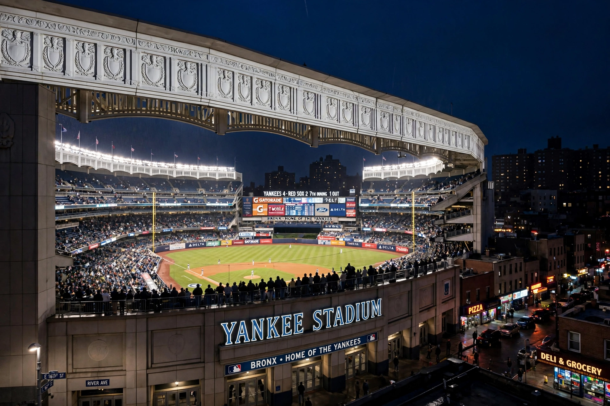

From Wikipedia, the free encyclopedia
| New York Yankees | |
|---|---|
 Yankee Stadium in the Bronx on a game night, the white frieze along the roofline lit up | |
| Founded | 1903 (as New York Highlanders; Yankees from 1913) |
| Ballpark | Yankee Stadium, Bronx, New York City |
| League | Major League Baseball, American League East |
| World Series titles | 27 (most in MLB) |
| Colours | Midnight navy blue and white; pinstriped home uniform |
The New York Yankees are an American professional baseball team based in the Bronx, New York City, and one of the most successful and valuable sports franchises in the world. Founded in 1903, the club rose to dominance after acquiring Babe Ruth from the Boston Red Sox in 1920, beginning a century in which the Yankees won a record 27 World Series championships and 41 American League pennants. Their pinstriped uniforms and interlocking "NY" insignia are among the most recognisable symbols in sport.
Ruth, Lou Gehrig and the "Murderers' Row" teams of the 1920s made the Yankees champions in 1923 in the original Yankee Stadium — "The House That Ruth Built". Later dynasties followed: Joe DiMaggio and Mickey Mantle led post-war teams that won five consecutive World Series from 1949 to 1953; the George Steinbrenner era brought titles in 1977 and 1978 and then a late-1990s dynasty under manager Joe Torre, with Derek Jeter, Mariano Rivera, Jorge Posada and Andy Pettitte — the "Core Four" — winning four championships in five years. The current Yankee Stadium opened across the street from the original in 2009, and the Yankees won the World Series in its first season; their most recent pennant came in 2024, when they lost the World Series to the Los Angeles Dodgers.
The Yankees' rivalry with the Boston Red Sox is the fiercest in American baseball, and their Subway Series meetings with the New York Mets are a city institution. The franchise forbids player names on jersey backs and, famously, facial hair beyond moustaches — traditions that reinforce its corporate, winning-first identity.
Categories: New York Yankees | Baseball teams in New York City | Sports clubs established in 1903